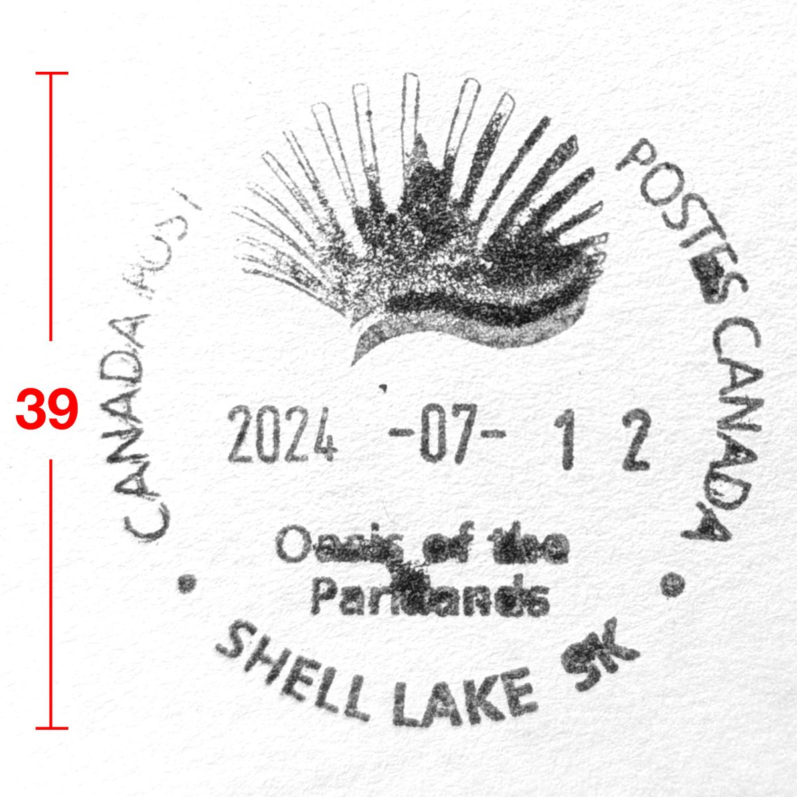

Shell Lake PO pictorial cancel
Oasis of the Parklands
- Status
- Active
- Run dates
- ? to present
- Design
- "Oasis of the Parklands"; village logo
- Ink colour
- Black
- Designer
- Unknown
- Post office
- Shell Lake PO
110 Main St
Shell Lake, SK
S0J 2G0 - Subjects
- sunray, tree, water
Collect it by mail. Send your stamped covers, with a stamped return envelope, to the post office address above. How to collect pictorial cancels by mail · en français
 Smeaton POWhere the North Begins
Smeaton POWhere the North Begins Englefeld POHome of the Hogfest
Englefeld POHome of the Hogfest Tisdale POThe Place to Bee
Tisdale POThe Place to Bee